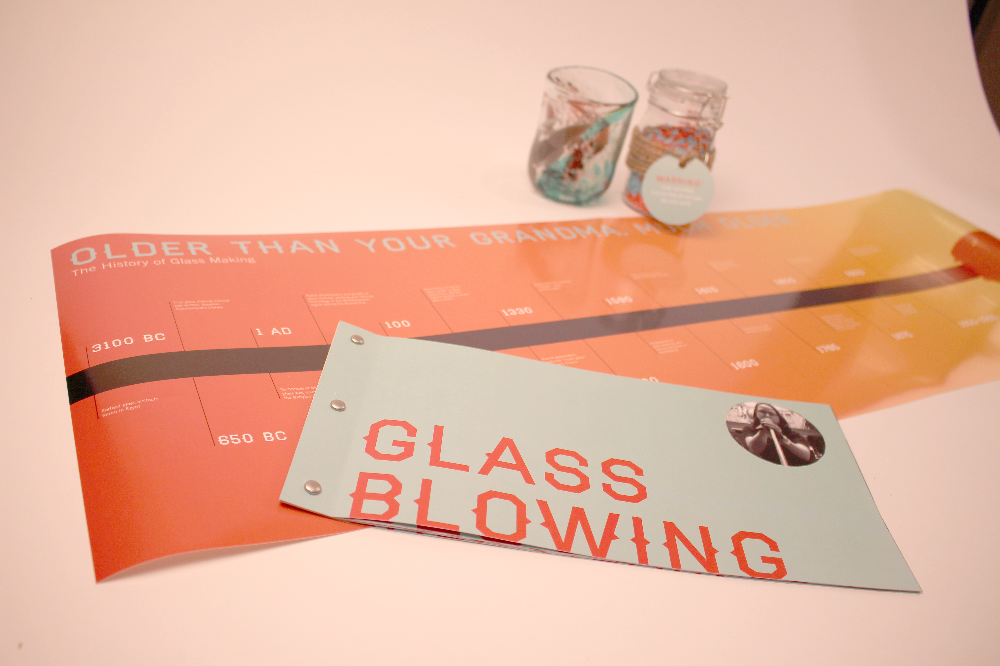
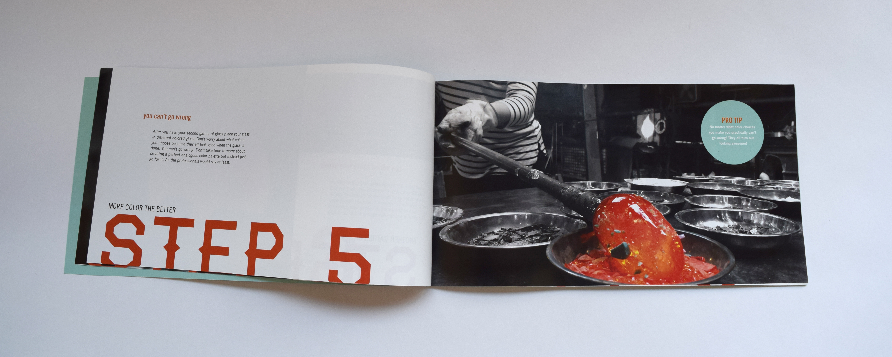
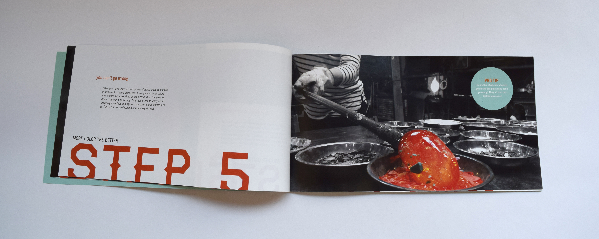

The Glassblowing Experience
Brief: The objective was to go out and experience something you never have before and then created a visual narrative. I went glassblowing at a glass studio in Cleveland. During my experience I worked with artists who has been glassblowing for 18 years or longer. The artists were corky and fun and the shop was really rustic and industrial. They also had a pet chicken walking around the studio. After the experience I knew I wanted narrative to have a rustic feel with a corky tone throughout.
Above: These are all parts of the visual narrative. It includes an instructional step-by-step book on how to glassblow, a real glassblown cup from my experience, a jat of colored minerals used to dye the clear glass, a timeline, and a box to hold it all.


Above: A close up of the instructional booklet cover.
Below: Several spreads and close ups of the book.

 


Note: All photography shown in the book is my own.